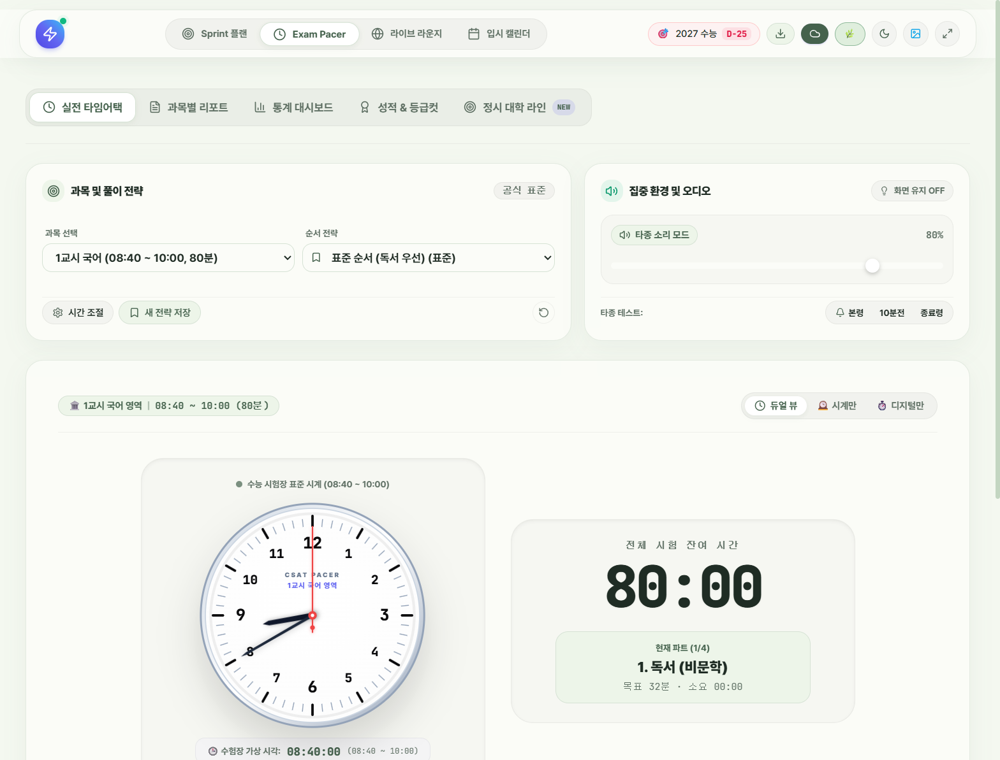
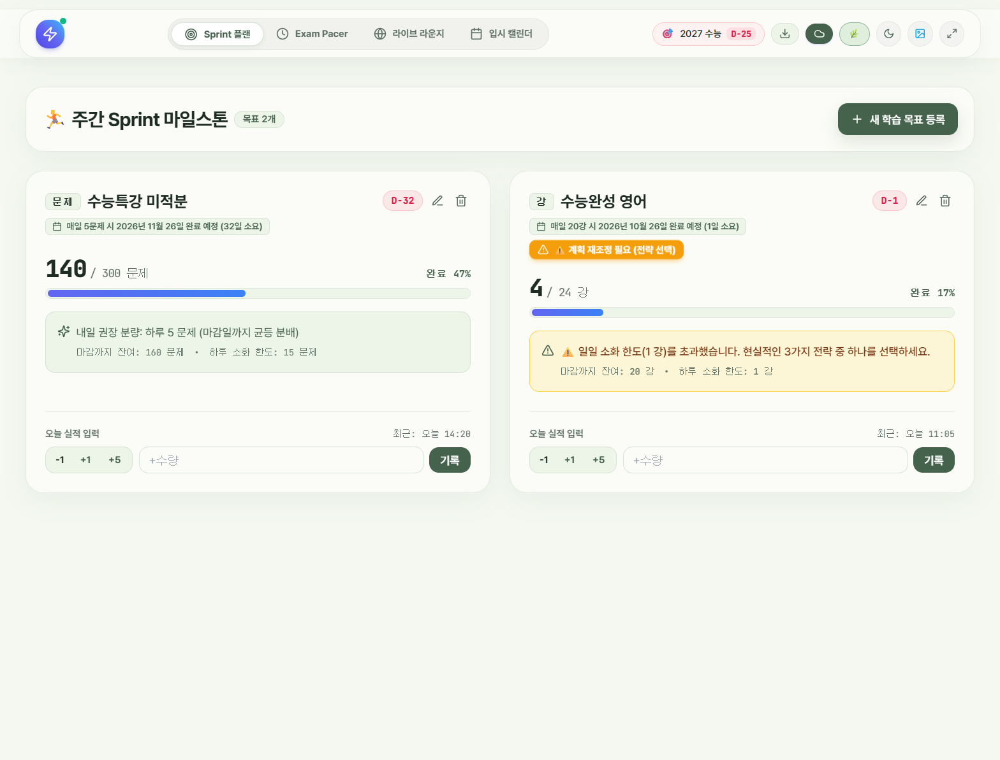

듀얼코어 콕핏 DualCore Cockpit
공부할 때 필요한 모든 도구를 하나의 화면에 담았습니다.
수능 실전 모의고사 타이머, 적응형 주간 플래너, 스마트 채점 통합 플랫폼
왜 만들었는가?
공부할 때 스톱워치 켜고, 플래너 앱 켜고, 채점기 따로 켜느라 앱을 여러 개 번갈아 쓰는 게 너무 비효율적이고 집중도 흐트러졌습니다.
수험생에게 꼭 필요한 4가지 핵심 도구
실전 모의고사 타이머
수능 시험장에 걸리는 실제 아날로그 시계판과 디지털 타이머 동시 연동. 독서실에서 소리 없이 화면 테두리가 부드럽게 반짝이는 무음 시각 알림과 실수 방지 되돌리기 기능 탑재.

적응형 주간 플래너
계획이 밀려도 자책하지 않도록 현실적인 대안을 자동 재배분(강제상향/주말이월/가지치기). 남은 분량을 실시간 계산해 "매일 N강씩 들으면 몇년 몇월 몇일에 끝나는지"를 카드에 바로 알려줍니다.

기출 등급컷 & 스마트 OMR 채점
역대 수능·모의평가 확정 등급컷 데이터를 내장했습니다. 원점수 직접 입력, 틀린 번호만 콕 찍기, OMR 카드 방식 등 원하는 방법으로 빠르게 채점하고 내 전국 백분위 추이를 그래프로 확인합니다.
6자리 PIN 동기화 & 실시간 자습 라운지
복잡한 회원가입 없이 6자리 PIN 번호로 PC, 태블릿, 스마트폰 간 데이터를 즉시 동기화합니다. 클라우드를 통해 "현재 전국에서 함께 자습 중인 수험생 수"가 실시간으로 집계되며 24시간 응원 전광판을 지원합니다.
개발 중 겪은 문제와 극복
처음 기획서와 달리 개발을 진행하면서 만들고 싶은 기능이 계속 추가되다 보니, 이것저것 뒤섞여 앱의 핵심 정체성이 무엇인지 모호해지는 문제가 발생했습니다.
많은 고민 끝에 불필요한 기능들은 과감히 덜어냈습니다. 수험생의 핵심 일과인 '실전 모의고사 훈련'과 '주간 진도 관리'라는 두 개의 기둥(듀얼코어)에 집중하여 모든 기능을 깔끔하게 정리했습니다.
AI 모델과 페어 프로그래밍
아이디어를 구체화한 후 Google Antigravity 3.8 Flash High 모델과 함께 실시간으로 코드를 작성하고 문제를 해결하며 빠르게 서비스를 완성했습니다.
실전 풀스택 개발 경험
React를 통한 웹 화면 구성뿐만 아니라 Firebase 실시간 데이터베이스 연동, GitHub 코드 관리, Vercel 클라우드 자동 배포까지 실제 개발 현장의 흐름을 직접 체득했습니다.
결과 매우 만족 & 다음 도전
머릿속 생각을 실제 동작하는 완성도 높은 앱으로 만들어내어 매우 만족스럽습니다. 다음에는 더 실용적이고 더 큰 규모의 대형 프로젝트에 도전해보고 싶습니다!